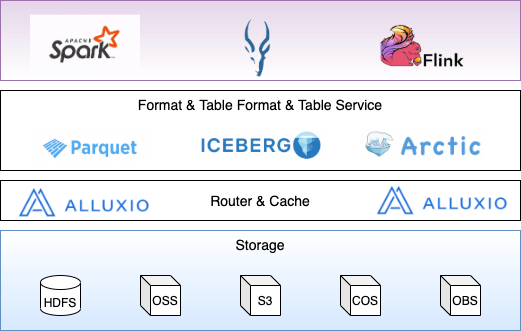
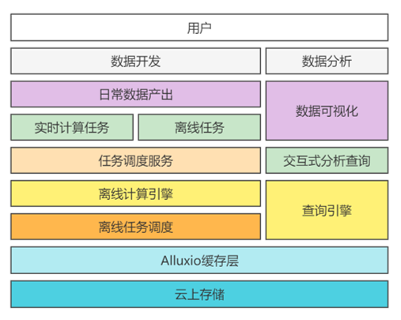
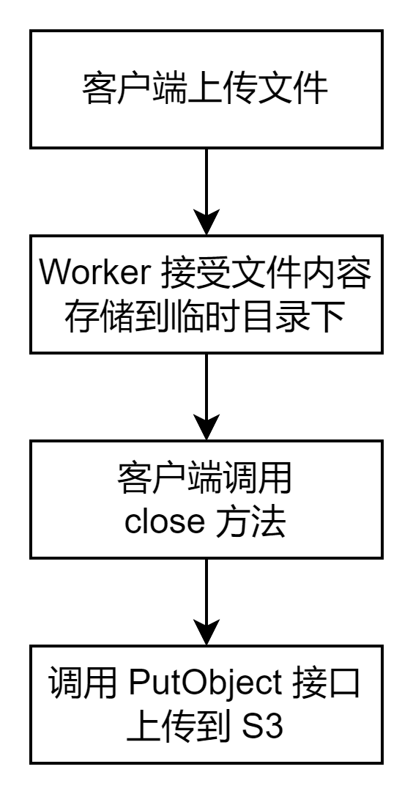
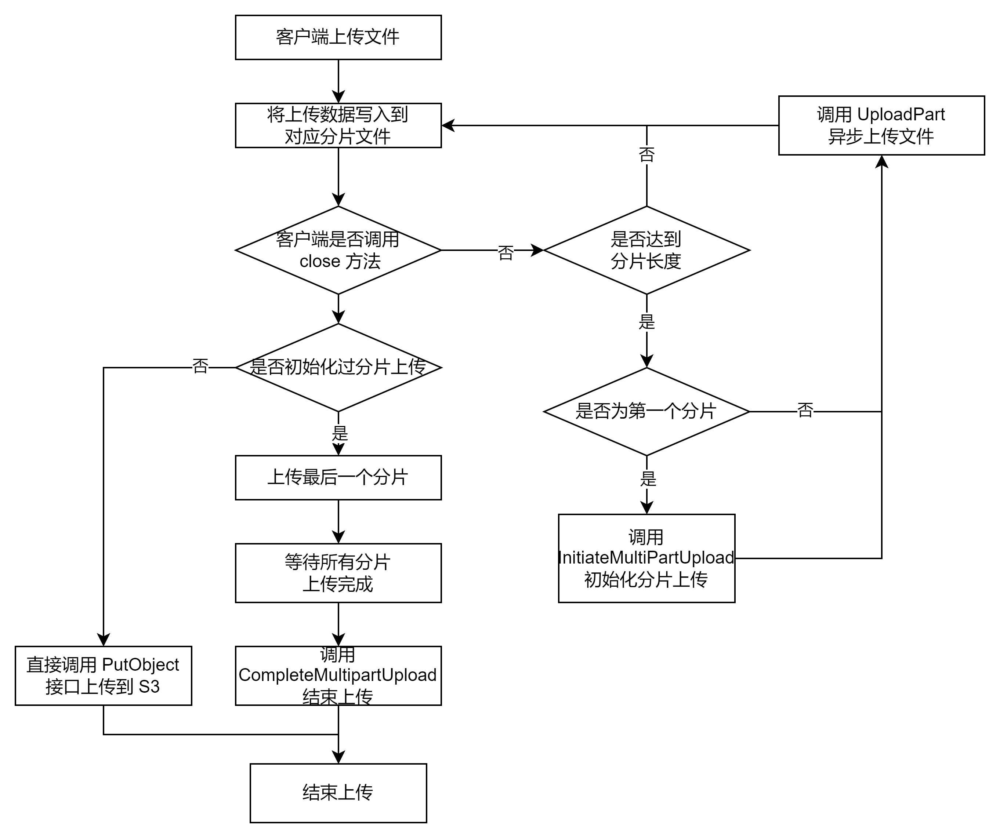
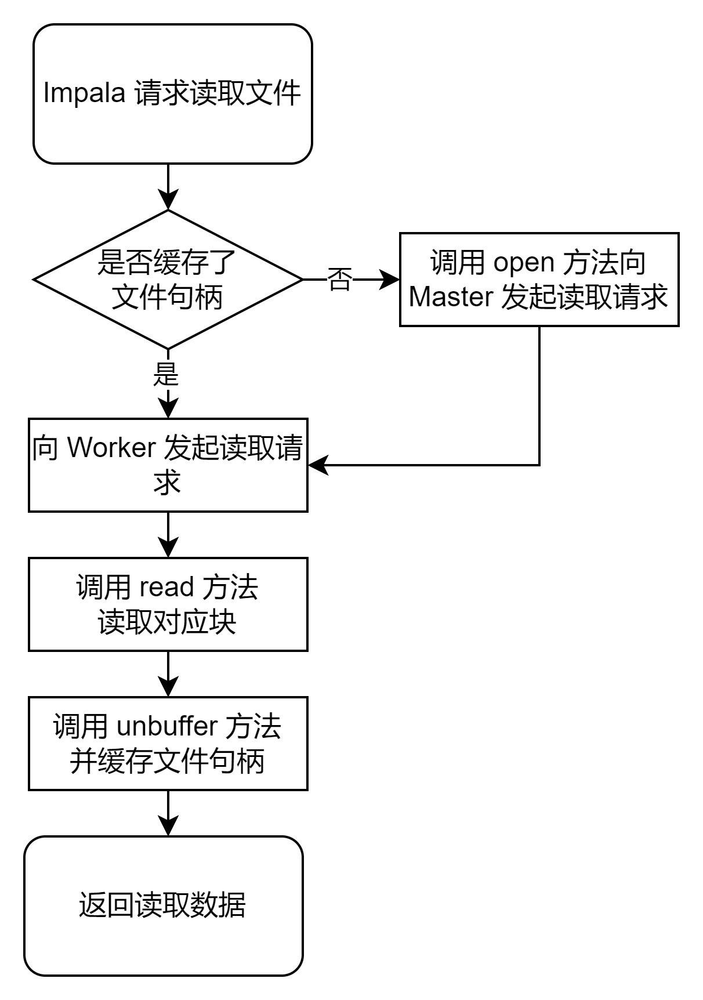
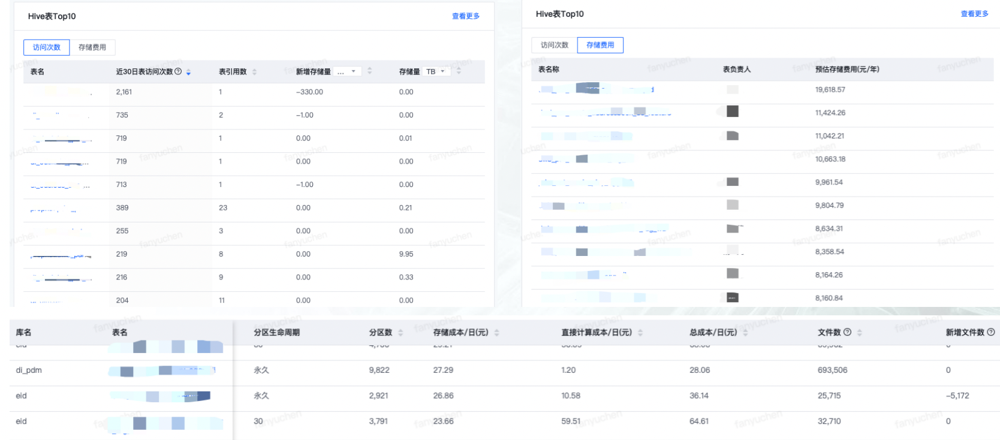
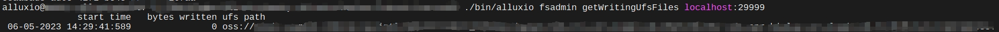
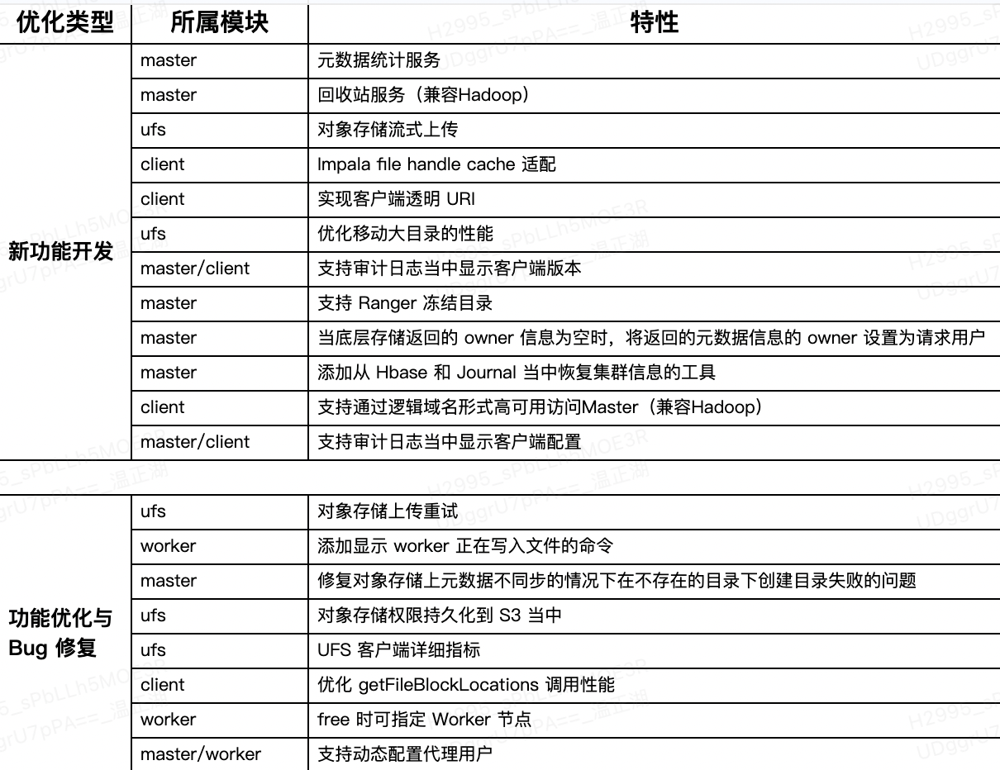
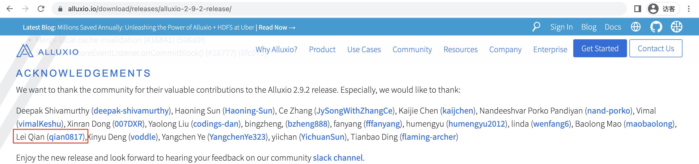

Alluxio是世界上第一个面向基于云的数据分析和人工智能的开源的数据编排技术，它为数据驱动型应用和存储系统构建了桥梁，将数据从存储层移动到距离数据驱动型应用更近的位置从而能够更容易被访问，这还使得应用程序能够通过一个公共接口连接到许多存储系统。Alluxio内存至上的层次化架构使得数据的访问速度能比现有方案快几个数量级。
在大数据生态系统中，Alluxio位于数据驱动框架或应用和各种持久化存储系统之间。Alluxio统一了存储在这些不同存储系统中的数据，为其上层数据驱动型应用提供统一的客户端API和全局命名空间。本文主要基于Alluxio在网易数帆的大数据基础设施产品-NDH（Netease Data Hub）上的使用实践，来介绍我们对Alluxio的应用和优化。
云上大数据平台
下图所示为网易数帆NDH在公有云环境部署的系统架构图，从中可以看到，Alluxio承当了存储层统一入口的角色，除了支持使用分布式文件系统HDFS作为底层存储外，还通过标准存储接口（S3接口）统一底层不同存储，可以同时接入多种不同异构存储引擎，包括国内外各公有云产商的对象存储系统，如阿里云OSS、AWS S3、腾讯云COS和华为云OBS等。

在这套方案中，Alluxio发挥了存储层的文件管理、IO路由和缓存加速的功能，计算和查询引擎通过Hadoop兼容接口访问Alluxio。在已有的客户实践案例中，得益于Alluxio的引入，云上大数据系统的整体性能提升了数十倍。为了使Alluxio在这套方案中稳定运行、发挥应有的作用和更好得融入到整个产品体系中，我们在多个维度上做了优化和增强，涉及Alluxio的Master、Worker和Client等组件。本文接下来从对象存储适配、计算和查询引擎适配（Spark、Flink和Impala等）、与网易数帆产品体系融合以及提供更好的使用体验等角度介绍在Alluxio所做的相关优化。
对象存储优化
在云上存算分离的场景下通常会选择使用公有云提供的对象存储来作为存储层，计算框架需要适配不同的对象存储，例如AWS S3、阿里云OSS等等，为了避免不同的对象存储带来的适配成本，如前所述，我们选择通过Alluxio来提供统一的访问入口，作为云上对象存储的统一解决方案。

在使用Alluxio对接对象存储的过程中遇到了包括性能和可用性在内的不少问题，比如文件（对象）上传、文件的删除和重命名操作等等，下面举例说明。
对象存储流式上传
大数据场景通常会通过Spark等计算引擎执行ETL任务，然后通过Alluxio上传文件到对象存储当中。在使用过程中发现Alluxio处理上传文件请求时，Worker会先将上传的数据写入到Worker节点本地的临时目录上，然后在客户端调用close方法时将本地文件上传到对象存储上。

这样做带来了以下几个问题：
临时目录必须足够大来存储文件，如果上传的文件过大可能会占满整个磁盘，甚至级联影响整个机器上的服务。在某个线上环境曾出现用户提交的任务产生大文件，导致部分节点临时目录磁盘被打满，使得整个大数据平台服务不可用，带来了较大的不可用风险；
通常对象存储PutObject接口有上传文件大小的限制，无法上传文件大小超过该限制的文件。在社区实现的OSS和OBS UFS当中存在5GB文件的限制。在某个客户环境上也出现了超大任务的临时数据文件较大的情况，导致用户只能修改任务SQL降低文件大小来规避限制；
上传时间慢，因为Alluxio Client到Alluxio Worker发送数据和Alluxio Worker向UFS发送数据这两个过程是串行的，无法充分利用网络带宽；
社区实现没有重试机制，即使实现后出现上传失败需要重新上传整个文件进行重试，性能不佳。
针对这些问题我们开发了使用分片上传来替代现有机制，支持针对S3、OSS、OBS等对象存储的流式上传能力，并贡献给了开源社区：https://github.com/Alluxio/alluxio/pull/16122。
开启流式上传后，Alluxio Worker在上传的文件大于指定大小后会使用分片的形式来进行上传，这样首先Worker上的占用空间就会降低，因为一旦一个分片上传成功后，该分片在磁盘上的临时文件就会被删除。

其次因为Client传输数据到Worker和Worker传输数据到UFS是并行的操作，在上传时间上也会变短。在我们的测试当中，如果传输一个8 GB的文件到S3上，原先的方式需要大约50 s的时间，而优化后只需要30s，性能提升非常明显。
分片上传对于重试机制也更加友好，在重试时只需要重新上传一个分片而不是整个文件，降低因为网络问题等原因导致的上传失败所产生的影响。
Rename 性能优化
在大数据场景下，ETL任务执行期间会先将跑批的结果写入到临时目录当中，然后在整个任务完成后将临时目录改名为正式目录。由于大多数对象存储没有原生的Rename接口，需要通过copy object结合delete object的方式来模拟移动操作，这在拥有大量对象的目录上进行移动操作会存在性能问题。
虽然在对象存储上使用copy+delete的方式很难改变，无法做到像HDFS一样非常快速地Rename。我们通过合并减少delete object的请求次数来尽可能地提升Rename的性能。在之前的实现中，如果一个目录下存在1000个文件，需要调用1000次copy和delete请求，我们通过合并delete请求，按照每次1000个对象批量发送delete请求，这样只需要向对象存储调用1000次copy和1次delete请求，大幅加快了请求速度。在我们的测试当中，Rename目录的性能比原来提升了大约30%，具体实现详见：https://github.com/Alluxio/alluxio/pull/16527。
删除操作性能优化
我们有些用户将网易大数据系统部署在华为云上，在实践中发现该用户的Spark任务执行过程有时会因为各种原因在数仓表的目录中遗留临时目录未删除，清理这些目录时发现执行速度很缓慢，分析目录结构后发现每次执行的临时目录中内容都是数仓表目录的近似副本，保留了所有的分区子目录，而此表的分区数又比较庞大，因此导致删除临时目录时有非常多的删除操作。
删除这种结构的目录无论是Alluxio层面还是底层对象存储层面都比较慢，由于用户位于华为云，而OBS对象存储具有原生的Rename能力，因此我们对Alluxio的删除操作进行了语义的微调，由直接删除变为移动至自定义目录，然后由OBS的生命周期管理来保证数据被及时删除，配套使用Alluxio的元数据定期同步机制，确保Alluxio上的元数据快速恢复一致性。将删除行为调整为Rename进行延迟删除能够有效避免用户的误删除行为，这与NDH产品的高安全性定位是相匹配的。
经过这样调整后，删除的行为实际上变为了定向Rename和延迟删除，性能提升极为明显，在客户的部分使用场景下，有些任务可以达到几十倍的性能提升。
在该客户实践中，Alluxio需要依赖OBS生命周期管理的定时删除机制，这显然不是最优的，因此，我们又进一步在Alluxio上引入了回收站能力，实现Alluxio层的定时删除逻辑，详见本文后续章节描述。
Impala引擎适配
在网易数帆NDH主要使用Impala作为OLAP查询引擎，Alluxio作为云上大数据方案的分布式缓存加速层，在与Impala配合使用时遇到过一些问题并进行了针对性适配，主要包括文件句柄缓存和文件URI转换等。
文件句柄缓存适配
Impala通过缓存文件句柄来减少到HDFS NameNode（NN）的元数据请求，避免避免频繁访问NN导致其负载过高，但是因为Impala是通过文件系统的URI的schema来判断是否启用文件句柄缓存的，这导致社区版Impala无法缓存Alluxio的文件句柄缓存。

因此，我们通过修改Impala代码使其能够识别Alluxio uri，这样Impala也能够缓存Alluxio文件句柄。但我们启用缓存后发现，正常执行若干查询后，接下来的查询会渐渐卡住不动。问题原因分析如下：
Impala会调用HDFS的HDFSOpenFile C API打开文件，在读取完成后，并不会立刻调用close方法关闭文件读取流，而是在调用unbuffer方法后将其放入Impala的文件句柄缓存中，如果之后其他的线程需要读取该文件时，会从文件句柄缓存中拿到对应的文件的读取流进行读取操作。Impala 4.1的相关代码如下
1 | Status HdfsFileReader::ReadFromPos(DiskQueue* queue, int64_t file_offset, uint8_t* buffer, int64_t bytes_to_read, int64_t* bytes_read, bool* eof) { |
出现问题的原因就在于Alluxio客户端的实现当中没有实现unbuffer接口，该接口的含义是释放被InputStream持有的网络连接和客户端缓存等资源，如果未实现接口那么调用HDFS C API的HDFSUnbufferFile函数会返回0，但是效果是什么都不做。因此为了让Impala在访问Alluxio时也用上文件句柄缓存，我们在Alluxio客户端上为Impala实现了unbuffer接口，在客户端调用unbuffer接口时调用BlockInStream.closeDataReader释放客户端与Worker节点的长连接和预读的数据缓存，具体实现可以参考我们提交的PR：https://github.com/Alluxio/alluxio/pull/16017。
Transparent URI
Alluxio访问地址的schema是Alluxio://，所以Impala访问需要将hive对应表的地址修改为Alluxio://开头的地址。有些大数据用户的需求是存量的访问HDFS的业务或集群中的仅有部分组件想用Alluxio，对于Impala来说，如何让Alluxio只应用于Impala引擎，而避免修改公共Hive元数据中的数据location？
其中一种实现方案是在Impala当中添加一个Alluxio白名单机制，根据用户访问的表在Impala查询前将元数据前缀从原先的URI转换为Alluxio URI，以此实现只有Impala访问Alluxio缓存，其他引擎不会访问到Alluxio。

但这种修改Impala内核的方式虽然能够达到仅为Impala启用Alluxio加速的目的，但存在门槛较高而不通用的问题（并不是每个用户都有修改内核代码的能力）。
因此，我们进一步思考能否让Alluxio客户端识别非Alluxio前缀的URI，进而用上Alluxio的加速功能呢？通过调研发现，企业版Alluxio的Transparent URI功能具备这样的能力，能够完美地解决这样的问题，该功能的相关介绍详见官方文档：Transparent-URI。我们在NDH的Alluxio内部版本上进行了类似增强，使其对业务更加友好。对于社区中存在类似述求的用户，建议使用企业版Alluxio。
getFileBlockLocations()优化
Impala会在元数据加载时调用Hadoop的getFileBlockLocations接口，通过该接口查找相应文件在Alluxio集群上块的位置，并用于在下发SQL任务调度时通过该信息将相应的scan range优先调度到相同主机上的Impalad上进行读取，从而达到尽可能保证本地读来加速Impala的性能。
在进行代码分析时发现Alluxio客户端调用getFileBlockLocations(FileStatus file, long start, long len)接口的逻辑存在性能优化的空间。在之前的实现中，该接口内部每次都会调用 getFileStatus获取文件块的地址信息，但是由于Alluxio客户端内部实现在获取文件元数据时已经包含了文件的块地址信息，其实调用getFileStatus方法是不必要的。我们优化了这里客户端实现的逻辑，去除了这个无用的网络调用，为Impala加载元数据时的性能带来了一定的提升。我们将该性能优化提交给了Alluxio开源社区，实现可以参见https://github.com/Alluxio/alluxio/pull/16054。
数据资产管理
NDH MetaService
用户在生产环境使用HDFS时，往往需要对存储资源进行各种分析，由于优化资源配置，降低存储成本。分析操作举例如下：
指定路径，查询元数据信息
指定路径，查询元数据的统计信息、文件分布信息
指定路径、时间、数据列，查询历史元数据列表
指定路径、时间，查询路径的历史读写次数和读写时间
filter查询功能，指定相关指标，及算数符，返回满足条件的目录数
在开源的Apache生态下，用户只能通过连接HDFS NameNode（NN）进行相关的API查询才能做到，但NN节点是HDFS的核心组件，其服务稳定性对于HDFS的服务SLA至关重要。大量频繁的分析性查询，可能导致NN出现FullGC等问题，为了既满足用户的分析需求又不影响HDFS服务稳定性，NDH提供了HDFS MetaService服务，用户可以通过访问该服务来进行分析性查询。在实现上，MetaService会解析FsImage，并回放FsEditlog和FsAuditlog等日志，并将其存入HBase中，这样，在响应用户的分析需求时，只需要访问HBase即可。

HDFS的MetaService服务与Hive层的相关功能相配合，可以提供包括表的分区数和文件数、分区生命周期、表的存储成本和变化趋势、表的访问情况等数据。在此基础上，可以进行热表分析、小文件合并、分区优化、存储格式优化等数据治理动作，能够有力支撑大数据集群的降本增效行动。

Alluxio适配
云上大数据方案不一定使用HDFS，但同样需数据资产分析等能力，同时为了面对不同云厂商的不同接口，避免针对不同的厂商多次实现，我们选择将该功能实现在Alluxio上。
因为我们需要获取到每个目录下所有文件和目录的数量以及这个目录下文件的总大小，最简单的方式是客户端直接访问Alluxio遍历所有文件的方式并计算进行实现。这种实现会对Alluxio造成大量压力。如果直接在当前的Alluxio Master节点上进行计算，那么也会对Master节点造成性能压力。我们希望新加的计算功能不影响集群的性能和稳定性，针对这个场景，我们开发了基于Ratis Listener的元数据统计服务。
Ratis是Apache基金会下面的一个Raft实现项目，被Alluxio用作保证Master高可用集群元数据的一致性。通常Raft集群中存在三种成员，分别是Leader/Follower和Candidate，Leader负责响应客户端的读写请求，Follower从Leader节点同步信息，当长时间未收到Leader心跳时成为Candidate节点，并选举产生新的Leader。
为了实现该功能，我们向Ratis社区贡献了Listener功能，只参与同步Raft Log而不参与投票过程，当Listener收到主节点的同步的信息时，计算相应路径下的文件目录数量和文件总大小，做到基本不影响客户端的读写请求性能和稳定性。

在Listener节点上计算后，我们会提供根据目录获取目录下的文件目录数量和文件总大小的HTTP API接口，并将相关的数据导入到Hive表当中，每天计算路径下文件大小的变化情况。
目录冻结功能
网易数帆大数据产品基于Apache Ranger实现了目录冻结功能，用户可以配置对满足要求的目录进行冻结，比如自动冻结某些指定目录或超过一定大小的目录，禁止对该目录的Rename和delete操作。
该功能可以在一定程度上避免用户因为误删除操作导致数据丢失，我们在Alluxio上适配了内部Ranger版本的能力。
Hadoop生态兼容性
逻辑域名访问
在我们使用初期对接 YARN时发现一些YARN无法正确的识别之前的Alluxio高可用地址，按照alluxio://master1:19998,master2:19998,master3:19998的格式配置会有如下问题：

这里使用YARN无法正常运行的原因是YARN无法正确的识别该URI地址，在解析URI时出现错误。为了让YARN能够支持使用高可用格式的Alluxio URI，我们仿照了HDFS逻辑域名实现开发了Alluxio逻辑域名的实现，能够支持以alluxio://ebj@my-alluxio-cluster这样的URI作为客户端配置的URI。
我们在Alluxio的Hadoop客户端当中添加了针对逻辑域名识别的逻辑，并从配置当中解析获取主节点地址作为访问高可用集群所需要的配置信息，目前使用新的逻辑域名来访问高可用Alluxio的方式已经广泛应用在我们的使用场景当中，同时我们也将该功能提交给了社区：https://github.com/Alluxio/alluxio/pull/14021。
动态代理用户配置
业务使用Alluxio时会有修改或者添加代理用户配置的需求，Alluxio中没有类似HDFS dfsadmin -refreshSuperUserGroupsConfiguration这样的命令来动态更新代理用户，每次修改代理用户都需要重启这个集群，由于集群重启的过程中可能导致任务失败，造成的影响范围比较大，尤其是对于Flink实时任务场景。
为了避免频繁的重启集群，我们在Alluxio当中实现了监听配置文件修改并动态配置代理用户的功能，为Alluxio提供了动态配置代理用户的功能，从而避免了大量的服务重启操作，减少对于上层业务的影响。
Hadoop 回收站增强
大数据的计算框架在使用Hadoop客户端删除时会先将删除的文件或者目录移动到/user//.Trash/Current路径下。在HDFS中，客户端将文件移动到指定的路径之后，会由NameNode负责定期使用时间戳生成检查点重命名Current目录为时间戳，并删除超过指定时间的检查点目录。由于在Alluxio社区版中没有类似NN定期清理的机制，就会使得本应该被删除的文件一直留在了存储系统上，导致底层存储空间大量的占用（用户存储成本变高），只能通过配置对象存储的定期删除功能来优化。基于Alluxio的易用性考虑，我们在Alluxio Master上仿照HDFS的代码实现了基于Alluxio的回收站功能，为用户提供了类似于HDFS的回收站功能。
运维能力增强
除此之外，我们还在Alluxio上做了一些通用功能的增强，方便Alluxio集群的运维和升级工作。
审计日志增强
在实践中，某个业务的大数据集群曾经出现过因为Alluxio客户端代码BUG导致其他大数据组件内存泄漏的问题，虽然我们快速修复了该问题并发布新的客户端版本，但是因为Alluxio客户端广泛分布在大数据组件和业务服务中，难以在短时间内找到所有使用老Alluxio客户端的服务。
为了及时通知所有用户修改并增强Alluxio客户端的管理能力，我们对Alluxio客户端进行了优化，支持在客户端请求Master节点时带上更多的信息，例如客户端的版本和配置信息，Master端会将这些信息打印到审计日志中。这样当我们在客户端需要升级时，可以在Alluxio Master端动态开启该功能，然后根据审计日志判断是否有其他服务仍然在使用老版本的客户端连接，并以此定位并告知哪些服务器上的哪些服务客户端版本需要升级。
1 | 2023-06-06 00:00:00,000 INFO AUDIT_LOG: succeeded=false allowed=true ugi=xxx,xxx (AUTH=SIMPLE) ip=/xxx:xxxxxx cmd=getfileinfo src=/tmp dst=null perm=null executionTimeUs=710000 clientVersion=2.7.3-b33d2e7 config={alluxio.master.rpc.addresses=mmaster119998,mmaster219998,mmaster319998} proto=rpc |
UFS API性能监控
为了能够在排查Alluxio性能问题时快速识别性能瓶颈，我们在UFS逻辑中添加了针对不同UFS记录对应UFS API接口调用时长的metric指标和异常日志，可以帮助我们排查分析一段时间内Alluxio性能变化原因是否是因为UFS性能不稳定导致的。

其他优化
文件上传感知：为了更好地排查线上问题，我们在Worker服务上添加了新的API-getWritingUfsFiles来识别当前Worker节点哪些文件正在以THROUGH或者CACHE_THROUGH方式写入。例如之前提到的对象存储上传时导致磁盘写满问题，由于之前社区实现的UFS写入的临时文件名是一个生成的UUID，无法直接根据磁盘上的文件名找到对应的上传文件，通过该功能就可以根据该命令找到对应的文件，从而排查找到相应的异常任务。

缓存行为控制：为了能够更好得控制每个Worker节点的缓存空间，我们针对Free和Load命令进行了增强，允许在命令中指定Worker节点来释放和加载数据缓存，从而做到更全面细致地管理Alluxio数据缓存。
总结与展望
目前，使用Alluxio作为统一存储入口的网易NDH云上大数据方案已经服务了在AWS、阿里云和华为云上的多个用户，未来该方案会服务更多的大数据用户。文中介绍了网易基于Alluxio做的一些工作，包括对于对象存储、大数据计算和查询引擎的优化以及对网易NDH服务所做的一些协同的功能等等，初步汇总如下：

Alluxio是个优秀的开源软件项目，社区交流活跃，配套机制完善，让参与者很有归属感。网易很早就开始关注Alluxio社区，并与负责社区建设的大佬进行过交流。本着知恩图报、合作共赢的态度，网易Alluxio团队积极参与社区共建，包括及时反馈Issue、贡献特性PR和修复已知Bug等，例举如下：

据不完全统计，团队累计向Alluxio和Ratis社区贡献了40+Patch，其中绝大部分PR在近期的10个Alluxio版本中。

未来，我们会一如既往地跟进社区的版本迭代，同时将一些内部具有通用性的特性贡献给社区，与Alluxio社区一道共同增强Alluxio在缓存特性、性能和易用性等方面的能力。